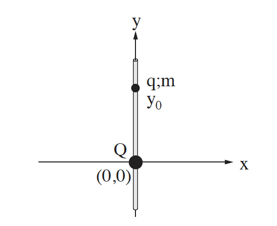
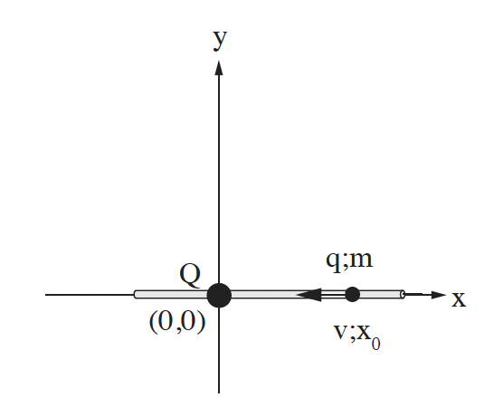

שאלה 1

בתרשים א מוצגת מערכת צירים x ו- y. בראשית הצירים מוחזק במנוחה גוף קטן בעל מטען חשמלי חיובי Q. מוט דק וחלק, שעשוי מחומר מבודד מוחזק בכיוון אנכי לאורך ציר ה- y. משחילים חרוז קטן, בעל מטען חשמלי חיובי q ומסה m על המוט האנכי מעל המטען Q, ומביאים אותו לנקודה ששיעורה y0. לאחר שמרפים מהחרוז, הוא נשאר במנוחה.
סרטטו את תרשים הכוחות הפועלים על החרוז, ורשמו ליד כל וקטור את שם הכוח. (5 נקודות)
בטאו באמצעות Q, q ו- m את המרחק y0 בין שני המטענים. (6.33 נקודות)

מחזיקים את המוט בכיוון אופקי לאורך ציר ה- x, כשהמטען Q נשאר בראשית הצירים. משחילים את החרוז על המוט מימין למטען Q, מעניקים לחרוז מהירות התחלתית שמאלה לכיוון המטען Q, ומשחררים אותו. (ראו תרשים ב). כאשר החרוז מגיע לנקודה ששיעורה x0, גודל מהירותו הוא v וכיוון המהירות שמאלה.
בטאו באמצעות נתוני השאלה את האנרגיה הכוללת של החרוז כאשר הוא עובר בנקודה ששיעורה x0. (הניחו שהאנרגיה הפוטנציאלית החשמלית ב"אין-סוף" היא אפס, ושהאנרגיה הפוטנציאלית הכבידתית לאורך ציר ה- x גם היא אפס). (8 נקודות)
בטאו באמצעות נתוני השאלה את המרחק המינימלי, xmin, מהמטען Q שאליו יגיע החרוז. (8 נקודות)
כיצד משתנה כל אחד מן הגדלים - גודל המהירות וגודל התאוצה - בתנועת החרוז מ- x0 ל- xmin (גדל, קטן, נשאר קבוע)? נמקו. (6 נקודות)